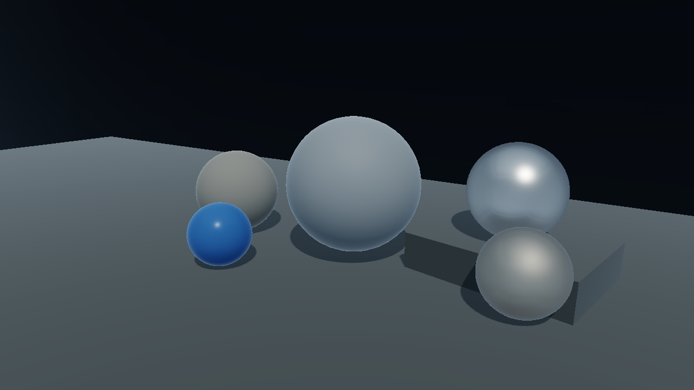
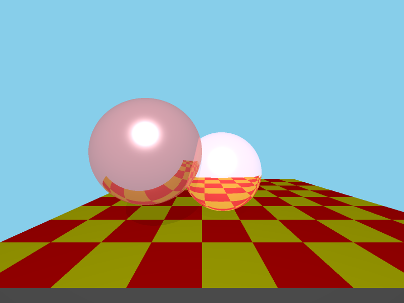
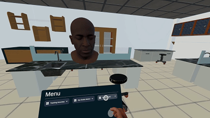
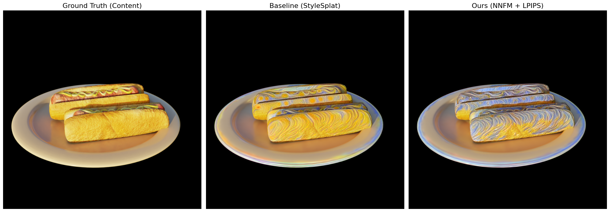

王滋涵（Zihan Wang）
RIT 计算机科学硕士｜厦门大学数字媒体技术本科｜网易 VR / 阿里 Unity 实习｜RIT MAGIC Spell Studios VR Developer
主要求职方向：引擎开发工程师 / 图形渲染工程师 / 游戏客户端底层开发。
技术主线：C++ 图形系统、Vulkan / OpenGL 渲染管线、Render Graph、资源生命周期、GPU 调试与性能分析。
补充方向：XR 实时交互系统、UE5 渲染模块、3D AI / Neural Rendering。
主要求职方向：引擎开发工程师 / 图形渲染工程师 / 游戏客户端底层开发。
技术主线：C++ 图形系统、Vulkan / OpenGL 渲染管线、Render Graph、资源生命周期、GPU 调试与性能分析。
补充方向：XR 实时交互系统、UE5 渲染模块、3D AI / Neural Rendering。
C++ 引擎开发
Vulkan / OpenGL
Render Graph / Resource Management
GPU Profiling / Debug Tools
Unreal Engine 5 / Unity
OpenXR / Meta SDK
PyTorch / OpenCV
招聘定位：面向国内图形渲染、引擎开发、游戏客户端底层与 XR 实时系统岗位。作品集重点证明：不是只做 Demo，而是能围绕渲染管线、资源管理、同步、调试工具和性能分析构建可解释、可扩展的图形系统。
建议浏览顺序：Vulkan Engine → OpenGL Engine → UE5 BRDF → 技术专题 → 简历 PDF。面试深挖建议从 Vulkan 同步、Render Graph、PBR/IBL、GPU Profiling 和 XR 实时反馈稳定性展开。
C++ / Vulkan
主攻底层图形 API、显式同步、资源生命周期和实时渲染框架。
Engine Systems
关注 Render Graph、Pass 依赖、Material / Shader / Texture 管理和调试工具。
Profiling
使用 GPU 时间戳、RenderDoc / Validation Layer / Unity Profiler 等方式定位问题。
代表项目｜面向图形渲染与引擎开发岗位
全部
引擎开发
图形渲染
XR/VR
AI/视觉
Vulkan 引擎原型 / 实时渲染器（Vulkan Engine）
C++20Vulkan 1.3GLSLRender GraphPBR / IBLGPU Profiling
- 独立构建基于 Vulkan 1.3 的引擎原型，覆盖 Swapchain、Command Buffer、Descriptor、Pipeline、Dynamic Rendering 与 Synchronization2 等显式图形 API 核心模块。
- 实现 PBR 材质、法线贴图、阴影映射、手写 PCF、HDR、Bloom、Tone Mapping、IBL 预滤波与 BRDF LUT，形成完整实时渲染链路。
- 设计 Render Graph 层，使用 Pass 读写声明组织渲染流程，统一管理图像布局转换、临时渲染目标、资源生命周期与 Barrier 生成。
- 加入 GPU 时间戳、场景层级、材质参数调试、渲染目标查看等工具，用于定位渲染错误、分析 Pass 耗时和验证资源状态。
工程难点
- Vulkan 显式同步复杂，需要协调 pipeline stage、access mask、image layout 与多帧并行资源状态。
- Descriptor、Buffer、Image 与临时渲染目标的生命周期必须与帧资源和 Render Graph 依赖关系一致。
- 在 PBR、阴影、后处理和调试视图之间组织清晰的 Pass 边界，避免渲染功能堆叠成不可维护的 Demo。
可深挖点
- Synchronization2 / Image Layout Transition / Barrier 管理
- Render Graph 资源读写声明、临时资源分配与调试可视化
- PBR + IBL 管线、BRDF LUT、HDR / Bloom / Tone Mapping

OpenGL 模块化渲染引擎（CGRenderEngine）
C++OpenGLGLSLPBRHDR
- 构建模块化 OpenGL 渲染引擎，覆盖场景组织、Shader/Material 管理、纹理资源、光照、阴影、HDR 与后处理流程。
- 实现 PBR、Shadow Mapping、Framebuffer 后处理、Tone Mapping 与基础调试流程，建立从 CPU 资源提交到 GPU 渲染输出的完整管线理解。
- 扩展光线追踪与超采样实验，用于对比实时光栅化与离线渲染中的采样、阴影、反射和噪声收敛问题。
工程价值
- 作为 Vulkan Engine 前置项目，系统训练 Shader、Material、Texture、Framebuffer 和 Post-process 的模块边界设计。
- 通过实时光栅化与离线光线追踪对比，建立对渲染方程、采样、阴影质量和性能开销的统一理解。

UE5 渲染模块：多次散射 BRDF 能量补偿（Kulla–Conty）
C++HLSLUnreal Engine 5PBR
- 基于 Kulla–Conty 多次散射思想实现 BRDF 能量补偿，改善高粗糙度 GGX 材质在单次散射模型下的能量损失问题。
- 编写 Monte Carlo 积分工具生成 BRDF 补偿 LUT，并在 UE5 中通过自定义 HLSL 节点接入材质流程。
- 对比 baseline GGX 与补偿后的材质表现，梳理 Fresnel、NDF、Geometry Term、split-sum 与 LUT 查表之间的工程关系。
面试价值
- 能从渲染方程、微表面 BRDF、能量守恒和实时查表优化角度解释 PBR 模块，而不是只停留在材质效果展示。
- 适合深挖 Monte Carlo 积分、LUT 预计算、split-sum approximation 与 UE 材质系统接入方式。

VR 实时交互系统：恐怖谷效应实验（Uncanny Valley VR）
UnityMeta SDKFace Tracking
- 构建基于 Meta Quest Pro 面部追踪的 VR 实验系统，将用户表情实时映射到虚拟角色，用于研究表情真实度、噪声与恐怖谷感知之间的关系。
- 引入平滑滤波、状态同步、眼部微动与材质/噪声变量，降低 tracking 抖动、输入丢失和表情不连续带来的负面感知。
- 项目体现 XR 交互、实时角色驱动、用户实验设计、Unity 工程实现和实时反馈稳定性处理能力。
工程难点
- VR 输入数据存在抖动、丢帧和不连续，需要在低延迟反馈与平滑稳定之间做权衡。
- 面部 tracking、角色表情映射、眼部微动和材质变量需要在统一实验流程中保持可控，避免变量混杂。

实时 3D 风格迁移（3DGS Style Transfer）
PyTorch3D Gaussian SplattingLPIPS
- 构建面向 3D Gaussian Splatting 场景的实时风格迁移管线，重点解决跨视角风格不稳定与时间闪烁问题。
- 结合感知损失与重投影一致性约束，提高多视角渲染下的结构保持和时序一致性。
- 作为 3D AI / neural rendering 项目补充图形主线，展示 PyTorch、CV 与实时 3D 表示的结合能力。
与岗位的关联
- 补充展示 neural rendering、可微/学习式视觉方法与实时 3D 表示的理解。
- 适合投递 3D AI、AIGC、NeRF/3DGS、视觉与图形交叉方向时作为加分项目。

岗位能力矩阵｜国内招聘关键词对齐
引擎 / 图形系统
C++VulkanOpenGLRender Graph
- 渲染管线封装、Pass 组织、资源生命周期、Descriptor / Buffer / Image 管理。
- Shader / Material / Texture / Framebuffer 模块拆分与调试工具接入。
实时渲染 / 性能分析
PBRIBLShadow MappingGPU Profiling
- 直接光照、阴影、HDR、Bloom、Tone Mapping、BRDF LUT 与后处理链路。
- 使用 GPU timestamp、RenderDoc、Validation Layer 和 Profiler 定位渲染错误与性能瓶颈。
实时交互 / 工程落地
UnityUE5OpenXRMeta SDK
- VR tracking、状态同步、输入滤波、角色驱动和低延迟反馈稳定性处理。
- 具备网易 VR、阿里 Unity 与 RIT MAGIC Spell Studios 项目/实习经历。
技术专题｜引擎开发能力拆解
Vulkan 引擎管线与资源管理
- 重点关注显式 API 中资源创建、上传、布局转换、同步、使用和销毁的完整生命周期。
- 围绕 Image Layout Transition、Synchronization2、Descriptor 更新和多帧资源组织建立可解释的调试路径。
- 通过调试面板和 GPU 时间戳分析定位渲染错误、Pass 耗时和资源状态问题。
Render Graph 与渲染 Pass 组织
- 使用 Pass 读写声明组织渲染流程，减少手写状态切换和手动 Barrier 管理带来的错误。
- 强调资源生命周期、临时渲染目标、Pass 边界、依赖关系和调试可视化，贴近真实引擎架构问题。
- 可用于解释 Forward / Deferred / Post-process 等不同渲染阶段如何纳入统一执行图。
渲染模块：PBR 与实时光照
- 实现从直接光照、阴影、法线贴图到 HDR、Bloom、IBL 的实时渲染链路。
- 通过 UE5 BRDF 项目进一步理解单次散射、多次散射补偿与 LUT 预计算。
实时系统与 XR 工程经验
- 在 VR 项目中处理追踪抖动、输入丢失、状态同步和实时反馈连续性问题。
- 作为引擎开发主线的补充，展示实时交互、性能稳定性和用户感知层面的工程判断。
经历
RIT · MAGIC Spell Studios｜VR Developer（Unreal VR）
- 基于 Unreal Engine（C++ / Blueprint）开发研究型 VR 系统与沉浸式应用。
- 负责 VR 交互、角色/场景模块、系统集成与性能调优，处理 tracking 抖动、状态同步与实时反馈稳定性问题。
网易（广州）｜VR 开发实习生
- 基于 Unity + Meta Quest 开发 VR 交互系统与核心玩法 Demo，参与输入、交互反馈和场景逻辑实现。
- 使用 Unity Profiler 和运行时调试手段排查渲染、脚本与交互链路中的性能问题，在内部测试场景中降低明显掉帧并改善运行稳定性。
阿里巴巴（杭州）｜Unity 游戏开发实习生
- 参与 Unity 游戏核心系统与玩法模块开发，负责背包系统、配置读取和资源管理相关功能。
- 优化数据组织、查询逻辑和资源引用方式，改善资源管理模块的内存占用、访问效率和可维护性。
简历摘要
王滋涵 · Zihan Wang
计算机科学硕士，主要求职方向为引擎开发与图形渲染。项目经验覆盖 Vulkan / OpenGL 引擎原型、Render Graph、资源管理、GPU 调试与性能分析、UE5 渲染模块、VR 实时交互系统与 3DGS 风格迁移。作品集重点展示从底层图形 API、渲染管线组织到实时系统稳定性的工程能力。
- 目标岗位：引擎开发工程师、图形渲染工程师、游戏客户端底层开发工程师、XR 实时系统工程师。
- 核心方向：引擎开发、实时渲染、渲染管线、图形系统、实时 3D 应用。
- 核心技术：C++、Vulkan、OpenGL、GLSL/HLSL、Unreal Engine 5、Unity、Meta SDK、OpenXR。
- 工程能力：资源管理、Render Graph、渲染 Pass 组织、调试工具、GPU profiling、性能分析、实时系统稳定性。
- 教育背景：RIT 计算机科学硕士；厦门大学数字媒体技术本科。
联系
- 电话：184-6332-5253
- 邮箱：zihanwang7@outlook.com
- GitHub：github.com/ZihanWG
- 作品集：zihanwg.github.io/ZihanW.github.io
- 简历：assets/resume.pdf
微信二维码